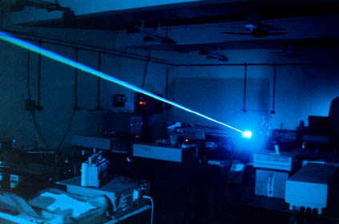

We intend to study synchronization phenomena in Nd-YAG laser under various coupling schemes such as unidirectional, bidirectional, open loop, closed loop and global coupling and also the coherent properties under various coupling schemes. As an initial step, the program on reverse period doubling phenomena in Nd-YAG laser is made. We also plan to study the coherent properties of semiconductor lasers under various coupling schemes to find out the effective coupling scheme for predicting coherence in lasers.
